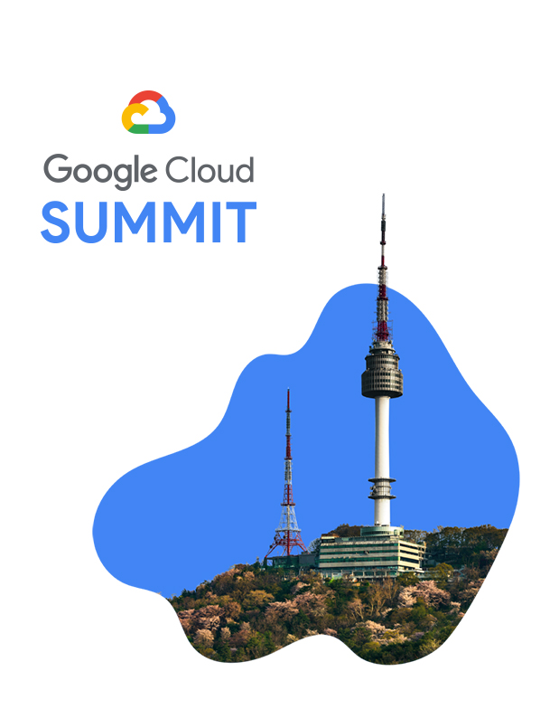
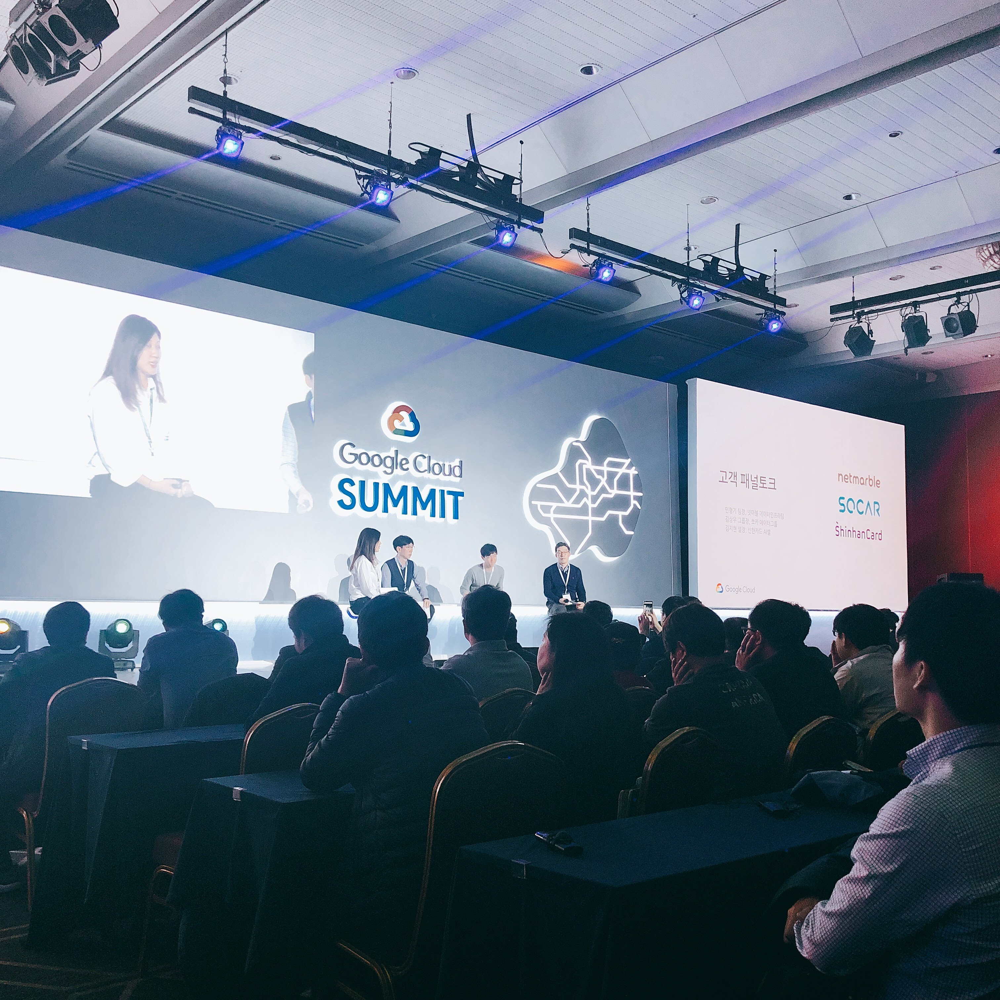
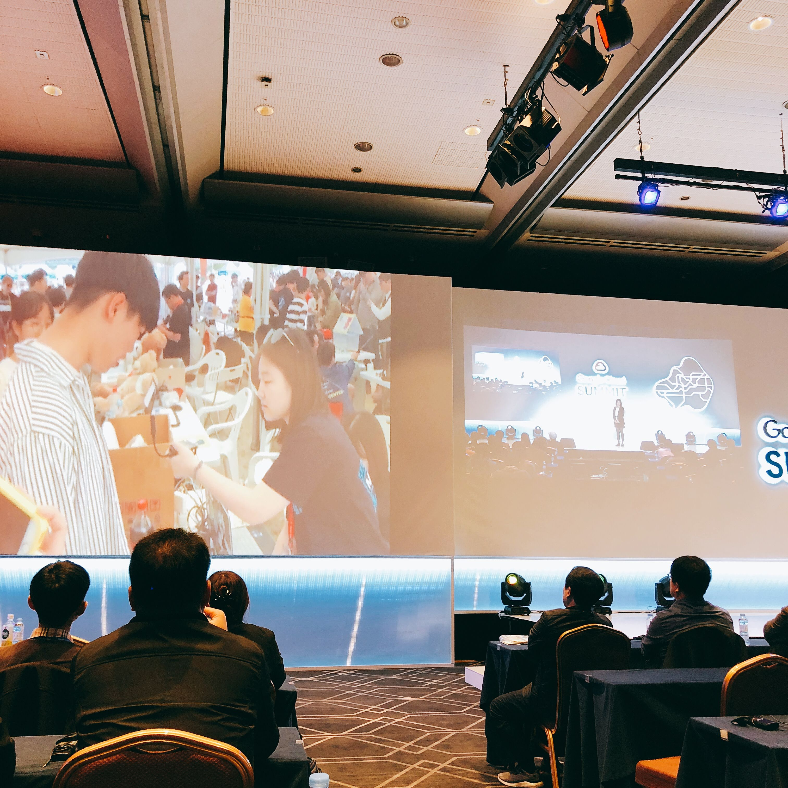
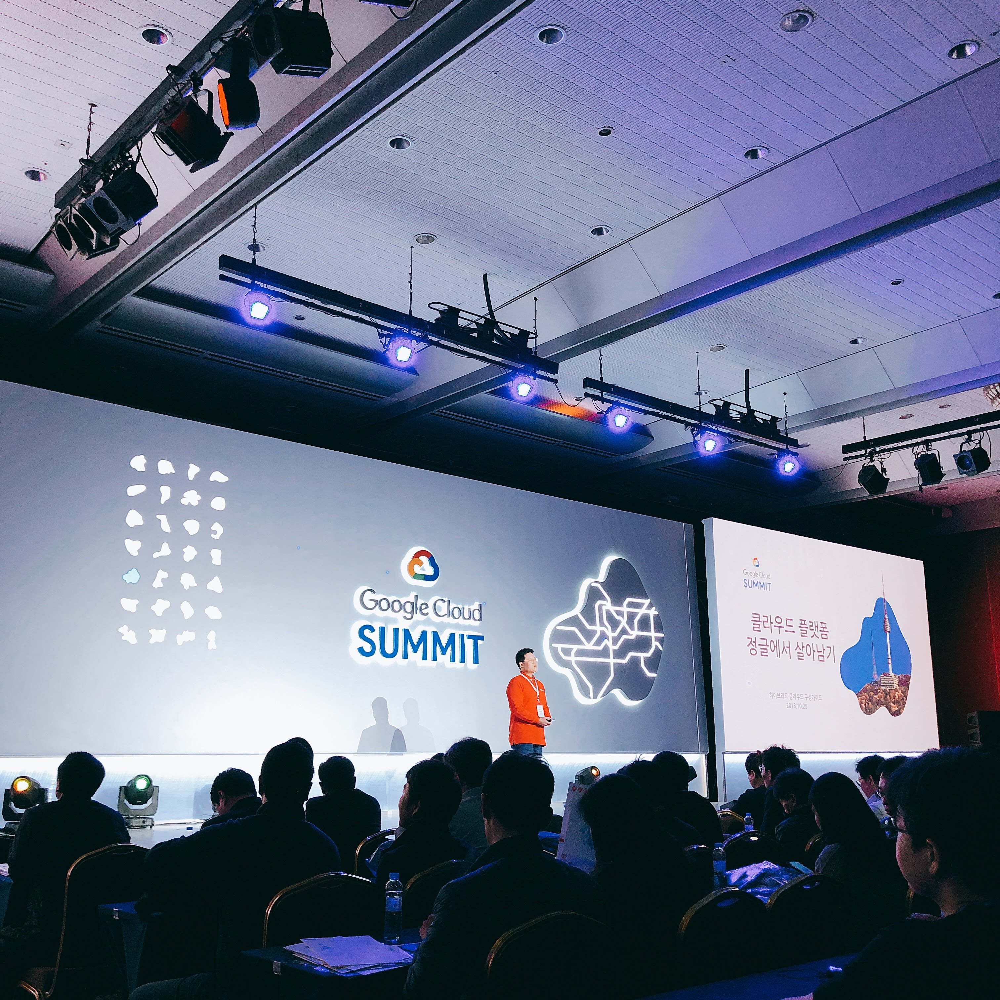
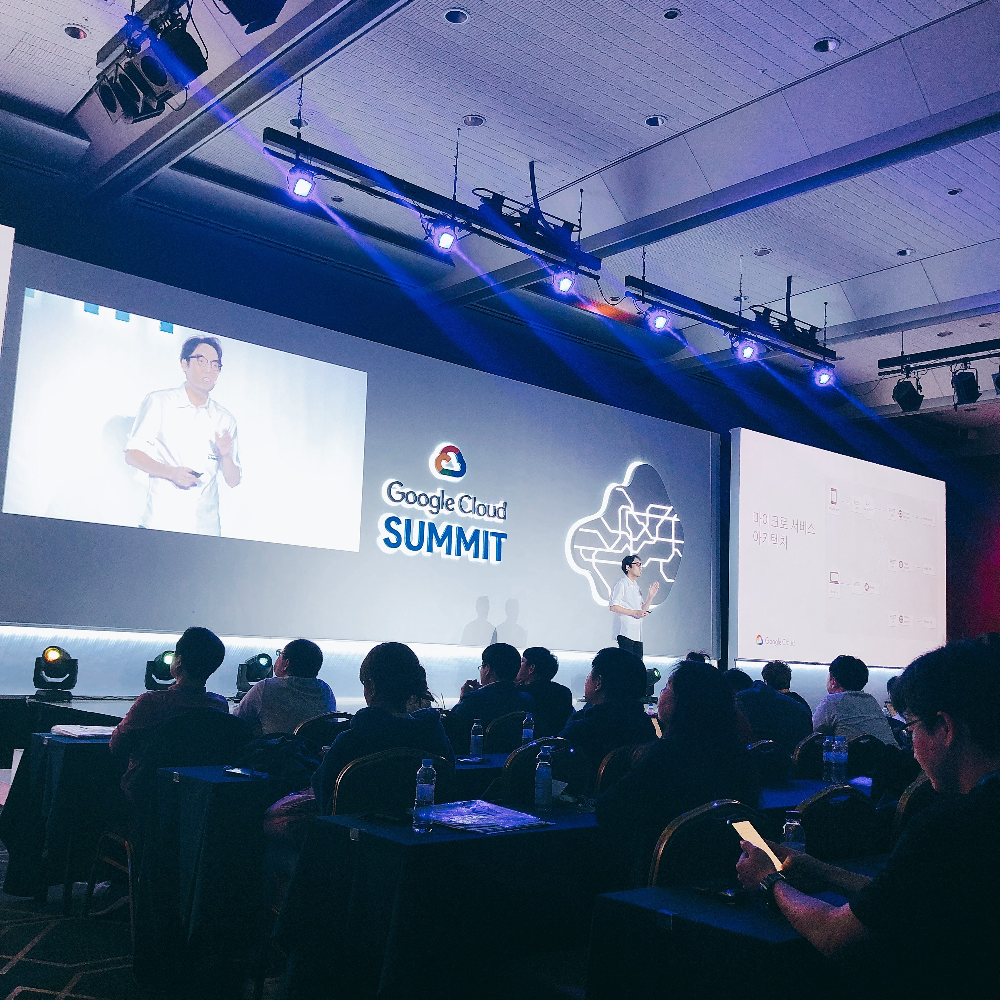
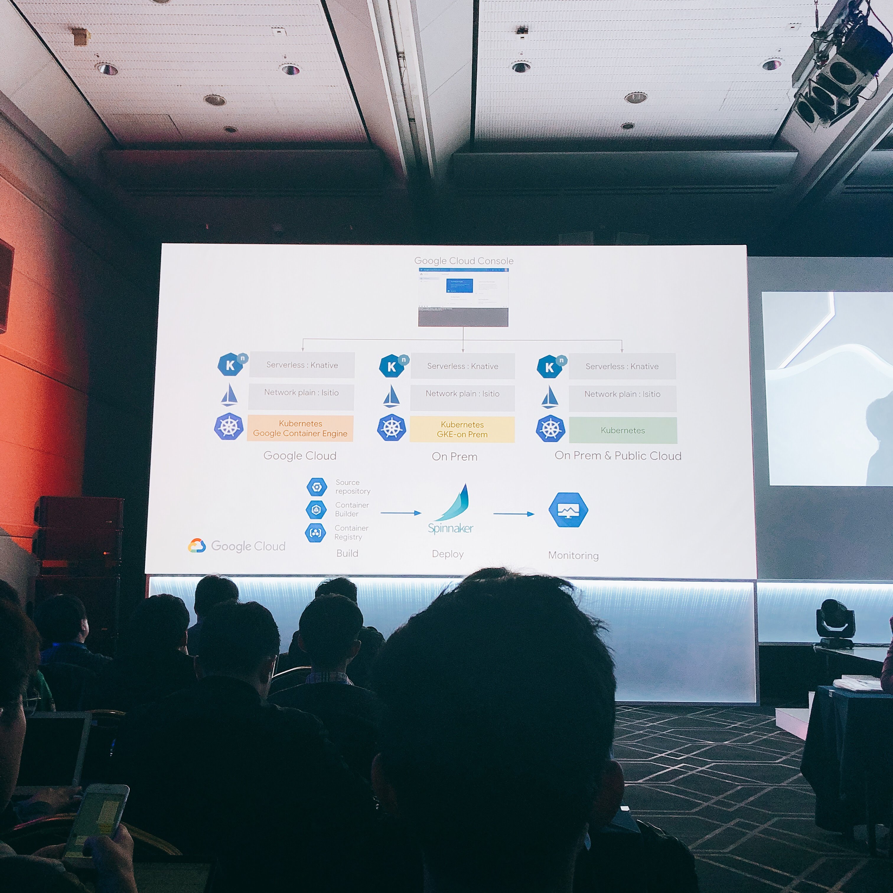
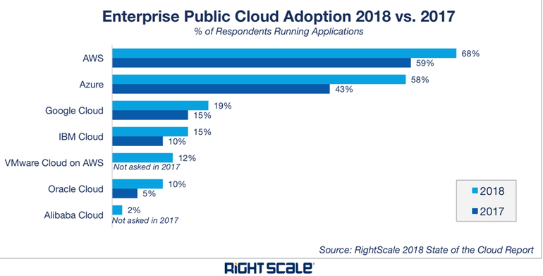

구글 클라우드 서밋(Google Cloud Summit)은 구글이 우리나라에서 처음으로 진행하는 대규모 클라우드 공식 행사입니다. 지난 번 AWS Summit 2018 Seoul 에서는 AWSome Day 교육에 참가하느라 다양한 세션을 듣지 못해서 이번 행사에 기대가 컸는데요. 구글이 아마존을 따라잡기 위해 어떤 전략을 쓰고 있을지도 궁금했습니다.

저는 사전 예약 페이지만 보고 갔는데 행사 홈페이지가 따로 있어서 다양한 정보를 제공하고 있었습니다. 특정 프로그램은 사전에 선착순 예약으로 진행했습니다.
도착해보니 다양한 프로그램과 부스가 있었는데요. 물론 AWS 서밋에 비하면 작은 규모였지만 흥미로운 프로그램이 많았습니다.
- 주제가 있는 런치 : Tech for Social Impact 라는 주제의 점심 시간 내 세션(사전 예약 진행)
- 구글 클라우드 플랫폼 실습 : 사전 예약으로 최대 1시간 실습 가능.
- 연사와의 대화 : 각 세션이 끝난 후 연사와 질문 및 대화할 수 라운지 운영.
- 골드 파트너 토크 : 골드 파트너사가 준비한 세션.
- 구글 클라우드 플랫폼 사용자 그룹 멤버 라운지(네트워킹) 및 해커톤(Hackathon) 결과 발표
- 포인트 적립 - 세션 및 부스 참가 시 포인트가 쌓이고 포인트를 간식이나 기념품으로 교환.
트랙은 총 4개 주제로 진행됩니다.
- 데이터를 활용한 머신러닝과 IoT
- 인프라에 대한 새로운 생각
- 더 쉽고 스마트한 앱 개발 - 구글 클라우드를 이용한 개발
- 생산성을 높이는 업무 환경 - G Suit 이용하기
머신러닝과 IoT 가 1번 트랙으로 나온 것이 인상깊었습니다. 클라우드를 이용해 대형 연구 기반을 가지고 있지 않더라도 쉽게 머신러닝과 AI를 사용할 수 있게 되었기 때문인 것 같네요. 3번 트랙은 서비스 사용법 위주일 것 같아서 클라우드 인프라 자체에 대한 이야기를 좀 더 듣기 위해 2번 트랙을 위주로 들었습니다.
- 구글 클라우드 퀵스타트! 고객과의 패널토크
- 클라우드 플랫폼 정글에서 살아남기
- 마이크로서비스 아키텍처 구성하기
- SRE 로 더 신뢰할 수 있는 시스템 구축하기
- 구글의 하이브리드 클라우드 전략
구글 클라우드 퀵스타트! 고객과의 패널 토크
GCP 를 처음 접하는 사람들을 위해 구글 클라우드 플랫폼에 대한 전반적인 설명이 있었습니다.
- 라이브 마이그레이션 - 무정지 상태에서 마이그레이션. 최소의 다운타임을 자랑.
- 커스터마이징 가능한 인스턴스 타입 - 리소스 사용 최적화
- CPU Core 당 네트워크 할당량 (1vCPU=~16Gbps)
- 다양한 컨테이너와 서버리스 지원 서비스

그리고 후반부에는 실제 GCP 를 사용 중인 국내 업체들과 간단한 패널 토크가 진행되었습니다. 넷마블, 쏘카, 신한카드에서 담당자가 나왔는데 실제 적용 사례를 들을 수 있어서 흥미로운 시간이었습니다.
넷마블은 처음엔 아기자기한 게임부터 시작했지만 점점 대규모 서비스를 하면서 데이터를 집계하고 분석하는 인프라를 확장해야 하는 상황이 되었고 글로벌 서비스에도 유리한 구글 클라우드를 선택했다고 합니다. 그런데 마이그레이션 시 빅 쿼리와 스키마가 좀 다른 점이 있어서 시간이 소요되었다고 하네요.
쏘카는 비트윈 개발사 VCNC 를 인수하면서 회사가 커지고 환경이 바뀌는 상황에서 구글 클라우드를 적용했는데요. 기존 오라클 기반의 인프라를 확장 시 비용이 너무 많이 들어서 클라우드를 선택했다고 하네요. 쏘카가 다루는 데이터는 복잡하지만 사이즈가 작기 때문에 클라우드 사용 시 비용도 아낄 수 있었다고 합니다.
신한카드의 경우 신한카드 챗봇을 만드는데 GCP 를 사용했는데 구글 클라우드의 한국어 자연어 처리 기능이 많이 개선되어 GCP 를 선택했다고 합니다. 하지만 아직 한글 지원이 부족한 면이 있어서 개선이 필요하다고 하네요.
고객 패널들이 향후 클라우드 도입 시 고려할 사항이라고 뽑은 것은 다음과 같습니다.
- 무조건 도입보다는 충분히 사전 검토를 하고 선택하는 걸 추천합니다.
- 스몰 사이즈로 PoC 부터 해보는 것이 좋습니다.
- 구글의 전문가 지원을 적극 활용해야 적용 시간을 줄일 수 있습니다.
- 새로운 기술(빅데이터, 머신 러닝, AI, IoT 등)을 도입 시 활용을 추천합니다.
20분 정도로 시간이 짧고 조금 딱딱한 면도 있었지만 그래도 여러 회사의 이야기를 들을 수 있어서 좋았습니다.
주제가 있는 런치
주제가 있는 런치는 사전 예약으로 진행되었지만 식사 시 스트리밍을 이용해 보여줘서 신청 안해도 볼 수 있었습니다. 점심 시간 내 가볍게 진행된 세션이었는데 상당히 흥미로웠습니다.

- 3D 프린터로 만드는 전자 의수
- 시각장애인 안내 AI 모바일 애플리케이션
- 파킨슨 병 검진 모델과 디바이스 + 모바일 앱
특히 흥미로웠던 것은 시각장애인 안내 AI 모바일 앱이었습니다. 동탄고 2학년 고등학생이 만든 앱인데 시각 AI 가 인도와 차도를 구분하고 장애물을 식별해서 길을 안내해주는 앱이었습니다. 하지만 대부분의 데이터가 인도에 대한 데이터였기 때문에 자전거로 동네를 돌아다니면서 데이터를 수집하고 학습시켰다고 하네요. 아이디어도 대단하고 실제로 만들어보는 실행력도 대단합니다.
파킨슨 병 검진 모델도 인상 깊었습니다. 파킨슨 병은 찾아내기 쉽지 않은 병 중 하나인데 목소리로 파킨슨 병을 검진하는 기술이 나왔다고 합니다. 하지만 이 기술은 영어 기반으로 한국어는 같은 모음이라도 발음이나 발성이 달라서 적용하기 어렵다고 합니다. 이를 해결하기 위해 고등학생이 아이디어를 내서 텐서플로 모델을 만들고 사람들과 모여서 디바이스와 모바일 앱을 만들었다고 하네요.
사람에게 도움을 주는 아이디어와 단지 아이디어에서 그치지 않고 구현해낸 사람들, 그리고 쉽게 구현할 수 있도록 서비스를 제공한 GCP 모두 좋았습니다. GCP 에 대한 이미지도 좋아질 수 있는 세션이었습니다.
클라우드 플랫폼 정글에서 살아남기
하이브리드 클라우드 구성 가이드에 대한 세션입니다. 이 세션은 파트너사 세션이었는데 상당히 유용한 세션이었습니다. 무조건 클라우드가 좋다가 아니라 실제 적용시 발생할 수 있는 사례들을 들어서 좋았습니다. 단편적인 고민보다 장기적이고 심층적인 고민을 통해 도입하는 것이 핵심입니다.

클라우드 도입 시 문제
일반적으로 클라우드로 마이그레이션하면서 기대하는 바는 가격, 확장성, 기술 등인데요. 그냥 도입한다고 되는게 아닙니다.
먼저 비용은 막연하게 싸다는 생각이 있지만, 실제로 장기간 운영해보면 줄어들지 않습니다. 확장성은 그냥 서버를 그대로 클라우드로 옮기는 Lift & Shift 방식으로 옮길 경우엔 확장성을 누리지 못하는 경우가 많습니다. 다양한 최신 기술을 적용 시에도 사전 설계가 뒷받침되어 있지 않으면 오히려 병목(bottleneck)이 되기도 합니다. 보안에 대한 기준도 클라우드 프로바이더가 가지고 있기 때문에 내 마음대로 조율하기가 어렵습니다.
다 좋을 것 같지만 실제로 해보면 예상하지 못했던 일도 많고 실제로 많이 발생하고 있습니다. 개발과 테스트 단계에선 알 수 없지만 잠재되어 있던 이슈가 운영 단계에서는 나타나기 시작합니다.
멀티 클라우드는 온프레미스(On-premise)[1]와 여러 클라우드 서비스를 함께 사용하는 방식인데요. 이것도 득보다 실이 많을 수 있습니다.
- 아웃 바운드 트래픽 요금이 발생합니다.
- 하나만 느려도 전체 성능이 저하됩니다.
- 프로바이더마다 보안 기준이 달라 보안 표준을 구축하기 어렵습니다.
- 선택지가 많아지면서 좋은 점만을 보고 도입하게 됩니다.
사전 필수 고려사항
먼저 어디에 사용할지 용도를 정확하게 정의해야 합니다. 먼저 이 기준을 명확하게 잡아야 여러 상황에서 기준이 뒤집히지 않습니다. 예를 들어 여러 문제가 있는데도 비용이 적다고 해서 도입한다면 기준이 뒤집히는 것이죠.
그리고 마이그레이션은 단순하지가 않습니다. 그냥 있는 그대로 옮긴다고 클라우드가 아니죠. 온프레미스에서는 장애가 아예 발생하지 않는 것을 목표로 하지만, 클라우드는 언제나 시스템이 죽을 수 있습니다. 하지만 서비스를 죽지 않게 설계하는 것이죠. 여기에 맞춰서 설계해야 합니다.
또한 운영과 비용에 대해서 감당할 수 있어야만 선택할 수 있습니다. 비용의 경우 당장은 아니더라도 장기적으로 비즈니스는 계속 변하기 때문에 이러한 변경에 대해서도 대비를 해야 합니다. 안그러면 갑자기 폭탄 요금을 맞는 경우가 있습니다.
또한 오픈 소스의 도입 및 전환도 검토해야 합니다. 상용 솔루션의 경우 종속성 때문에 클라우드의 장점이 사라지기 때문입니다. 오픈 소스를 쓰면 다른 클라우드 서비스 전환 시에도 그대로 구성해서 사용할 수 있습니다.
5 Things
- 오픈 소스를 사용하세요.
- 서비스간 종속성 없는 클라우드 서비스를 사용하세요 (GCP는 모든 서비스가 독립적임).
- 새로운 기술을 적용할 때는 먼저 벤더에서 제공하는 기술을 가져다 사용하되 장기적으로는 내재화해서 종속성에서 벗어날 수 있도록 하세요.
- 당장은 아니더라도 궁극적으로는 하이브리드 구성을 하는 것이 좋습니다. 사업자마다 장점이 다르기 때문입니다. 클라우드 운영 및 관리 기술을 내재화해야 합니다.
- 마이크로서비스 아키텍처를 적용하세요. MSA(Microservices Architecture)는 서비스 레벨에서 종속성을 탈출할 수 있지만 운영 및 관리가 어렵기 때문에 장기적으로 준비하면서 점차 적용해나가는 것이 좋습니다(마이크로서비스 Microservices (1) 아키텍처 소개).
마이크로서비스 아키텍처 구성하기
마이크로서비스 아키텍처를 GCP 에서 구성하기 위한 여러가지 툴(Kubernetes, Istio, Spinnaker, Knative 등)에 대한 세션이었습니다.

기존의 모놀리식(monolithic) 아키텍처는 통으로 개발하는 방식이죠. 그 대신 각 기능을 개별로 개발, 배포, 운영할 수 있는 서비스로 분산하는 것이 마이크로서비스 아키텍처입니다. 하지만 분산한만큼 독립적이라는 장점도 있지만 관리, 테스트, 로깅 등 운영하는 것이 어려워집니다. 그래서 자동화된 플랫폼을 구축하고 개발자가 플랫폼을 이용해 개발과 배포를 실행하는 것을 DevOps 가 필수입니다. 모니터링, CI, CD 등을 지원합니다.
마이크로서비스에 적합한 기술은 컨테이너도 있죠. VM 으로 가상화하고 그 위에 컨테이너를 한 단계 더 올려서 자원을 효율적으로 사용할 수 있게 됩니다. 각 컨테이너에 서비스를 배포하게 됩니다(마이크로서비스 Microservices (6) 배포 전략).
마이크로서비스는 수십에서 수백 개의 많은 서비스로 이루어져 있는데요. 이 많은 컨테이너를 어떻게 관리할까요? 해당 서비스를 어느 컨테이너에서 실행할지 관리해주는 것이 컨테이너 스케쥴러입니다. 바로 쿠버네티스죠.
이러한 컨테이너의 취약점은 보안입니다. 구글 쿠버네티스 엔진은 보안이 강하다는 장점이 있습니다. 컨테이너 이미지를 등록하면 자동으로 취약점을 스캔해주고 복잡한 보안 설정을 간단하게 할 수 있으며 노드 보안 패치를 자동으로 하는 등 이 외에도 여러 서비스를 지원합니다.
컨테이너 그 다음은 무엇일까요? 보통의 서버는 1천 대가 있으면 1천 대가 모두 동일하지 않습니다. 왜냐면 서버를 계속해서 수정하는 부분적으로 서버에 배포되기 때문입니다. 눈에서 내리는 눈송이는 모두 눈이지만 제각각 모양이 다른 것처럼요. 이런 특징은 잠재적인 장애의 요인이 되는데 이런 서버를 스노우 플레이크 서버(Snowflakes Server)라고 합니다.
이런 점을 해결하기 위한 방법이 피닉스 서버(Phoenix Server)입니다. 피닉스(불사조)는 죽지 않는 건 아닙니다만 죽으면 알로 돌아가 불 속에서 다시 태어납니다. 이렇게 서버를 수정하는 대신에 서버를 아예 죽이고 다시 생성하는 방식입니다. 매번 서버 이미지를 구워서(baking) 다시 하나하나 배포합니다.
배포하는 것도 일인데 Spinnaker 는 클라우드 상에서 배포 관리와 클러스터 관리를 제공합니다. 이를 이용하면 다양한 배포 전략을 사용해 자동으로 배포할 수 있습니다.
이렇게 분산된 환경에서는 관리할 것도 많다고 말씀드렸는데요, Envoy 라는 똑똑한 프록시 서버를 이용하면 다음과 같은 작업을 자동화할 수 있습니다. 이런 작업을 인프라 레벨로 내린 겁니다.
- 지능형 라우팅
- 동적으로 라우팅 경로 변경
- A/B 테스트
- 카날리 테스트
- 서비스 안정성
- 타임 아웃
- 재시도
- 헬스 체크
- 써킷브레이커 패턴 (문제 생길 시 다른 서비스로 여파가 전파되지 않도록 끊음)
- 보안과 정책
- 양방향 TLS
- 조직 정책
- 접근 권한 제어
- 접근양 제어
- 모니터링
- 서비스간 의존성
- 트래픽 흐름 모니터링
- 분산 트렌젝션 모니터링
이 프록시 서버는 서비스 옆에 붙어서 기능을 지원하는데요 마이크로서비스는 서비스가 워낙 많다보니 Envoy 도 많이 필요합니다. 이 많은 프록시 서버를 중앙에서 관리하는 툴이 Istio 입니다. Istio 는 자동으로 프록시 서버를 붙여서 배포하고 중앙에서 관리합니다.

이 많은 컨테이너를 모니터링하는 것도 쉽지 않죠. 컨테이너 모니터링은 다음과 같이 분산되어 있습니다.
- 하드웨어 레벨
- 컨테이너 레벨
- 애플리케이션 레벨
- 쿠버네이트 모니터링
복잡하고 모니터링 솔루션도 많습니다. 구글 클라우드는 멀티 Stackdriver 라는 종합 모니터링 툴을 제공합니다. 타사 클라우드 및 온프레미스까지 통합해서 모니터링하는 툴입니다. 게다가 여러 서비스 간 의존, 응답 시간 및 장애까지 시각화 분석이 가능합니다(베타 기능).
마지막으로 서버리스 서비스를 위한 쿠버네티스의 추가 컴포넌트인 Knative 도 있습니다.
- 바로 배포하고 실행
- 자동화된 운영 기능
기술적인 것도 흥미로웠고 연사 분이 재미있게 발표해주셔서 재밌게 들은 세션입니다.
SRE로 더 신뢰할 수 있는 시스템 구축하기
SRE(Site Reliability Engineering)는 신뢰할 수 있는 시스템을 구축하는 핵심입니다. 개발자는 민첩성을 중요시하고 운영자는 안정성을 중요시합니다. 그래서 이 둘 사이에는 벽이 생기기 마련인데요 이 둘의 균형을 찾고 두 가지 모두 이뤄내야 합니다. 구글은 ‘사이트 신뢰성 엔지니어’라는 직무가 있어서 이러한 벽을 무너뜨리고 공동의 책임 하에 시스템을 구축할 수 있도록 도와준다고 합니다.
- 측정항목 모니터링 및 경고
- 용량 계획
- 변경 관리
- 비상 대응
- 문화
인상 깊었던 점은 ‘장애가 발생한 것은 사람의 문제가 아니라 시스템의 문제다’라는 점이었습니다. 장애 발생 시 사람에게 책임을 묻지 말고 시스템과 프로세스에 문제가 있으니 그것을 고쳐나가야 한다는 것입니다.
구글의 하이브리드 클라우드 전략
위에서도 잠깐 나왔지만 하이브리드 클라우드에 대한 다양한 설계 방식을 알아보는 세션이었습니다. 내용이 너무 많은데 시간이 짧아서 급하게 진행되는 것이 좀 아쉬웠습니다. 나중에 발표자료가 나오면 천천히 살펴보고 싶은 세션입니다.
한번에 클라우드로 마이그레이션 하는 것은 쉽지가 않습니다. 크게 두 가지 방법이 있는데요.
- Lift & Modernize : 시스템을 먼저 클라우드에 그대로 올린 후 클라우드 네이티브 기술들을 활용하도록 변경.
- Improve & Move : 먼저 VM 또는 컨테이너 등 클라우드 네이티브 기술을 활용해보고 시스템을 그대로 클라우드로 이전.
기업 IT는 기본적으로 복합 환경이기 때문에 이에 대응할 수 있는 하이브리드는 실용적인 방법입니다. 퍼블릭 클라우드, 온프레미스, 모더나이즈(클라우드 네이티브), 타사 클라우드 등 이 네 가지를 섞어서 사용하는 것이 바로 하이브리드 클라우드 입니다.
구글 클라우드의 미래는?
구글을 대표하는 키워드 중 하나가 개방적 혁신입니다. TensorFlow 와 쿠버네티스도 모두 오픈소스화 했고 표준이 되었습니다. 이런 오픈소스 전환은 생태계가 확장될 수 있도록 합니다.

이런 맥락에서 구글 클라우드의 모든 서비스는 독립적이고 종속적이지 않습니다. 각 서비스가 독립적이라는 뜻은 해당 서비스 전처리 또는 후처리에 다른 서비스를 필요로 하지 않는다는 뜻입니다. 클라우드 시장에서 AWS 와 MS 보다 뒤쳐진 구글은 하이브리드 클라우드를 강조하며 이에 적합한 서비스를 제공하는 것으로 보입니다. 통합 모니터링 툴인 Stakdriver 도 마찬가지죠. 전 세계에 검색 엔진 서비스를 지원하는 구글은 인프라도 있고 오픈소스 텐서플로와 쿠버네티스의 기술도 가지고 있으니 클라우드 시장에서 앞으로 구글이 어떤 모습을 보여줄지 기대해봅니다.
Related Posts
- 개발자를 위한 인프라 기초 총정리
- 도커 Docker 기초 확실히 다지기
- 마이크로서비스 Microservices (1) 아키텍처 소개
- 마이크로서비스 Microservices (7) 모놀리스 리팩토링
- AWS 자격증 준비하기
- 스프링 부트 컨테이너와 CI/CD 환경 구성하기
- 1.온프레미스(On-premise)란 자체적으로 보유한 서버에 솔루션을 설치해 운영하는 방식. ↩